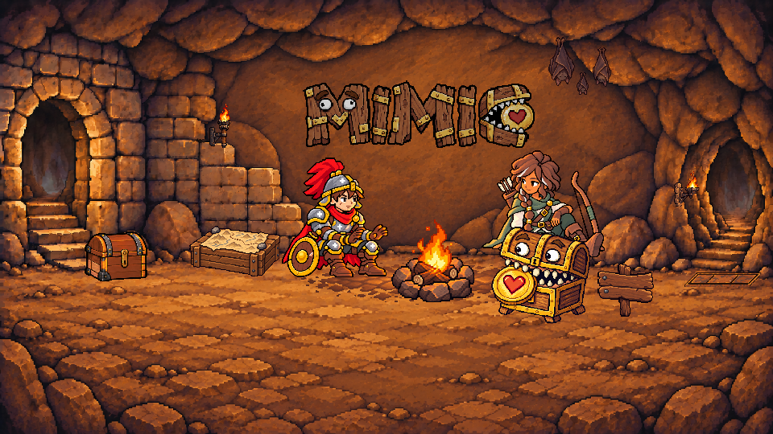
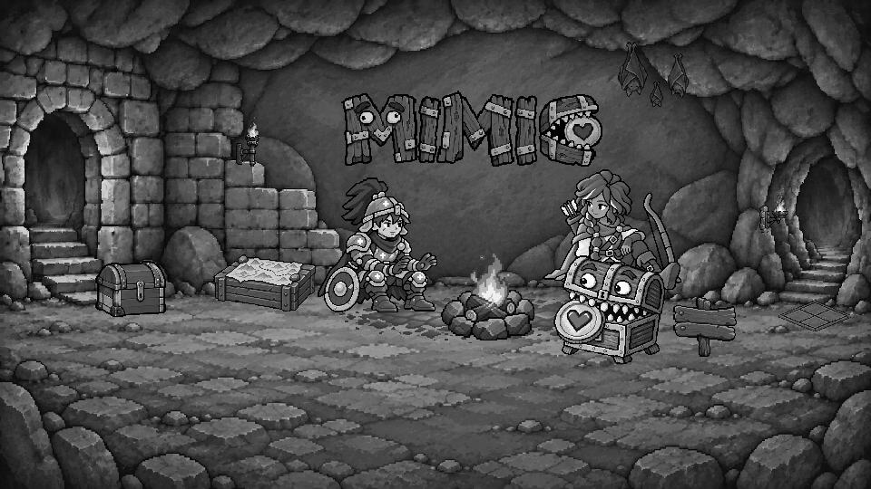

Landing — 壓力板 attempt-06
awaiting-calibration · 僅審外觀 · C
壓力板改為對齊地板石磚的扁平菱形，採 2×2 石板拼接，暖褐石面減少深色斑塊；兩條朝觀者的下邊保留下沉暗縫。候選尚未核准，本輪不審位置。
2026-11-03 續作：只使用現有五張，未重做量測、導引圖或 contract，未呼叫 ImageGen。選定既有 retry-04。畫布 85×35，origin (856,331)，中心沿用 (898,348)，opacity 0.85。
實際大小與像素細節
attempt-06 retry-04 · 1× · 85×35attempt-06 retry-04 · 4×真實灰階 · 1×真實灰階 · 4×
與真實地板石磚並排
兩者均為 4× 最近鄰放大，保留比例；右邊是 architecture-only 中 M2 石磚的未改色原始裁切（含鄰近地面），不是重新畫出的參考。候選可見寬約 80px；M2 實測寬 50px，約為 1.6 倍。
左：候選 · 右：真實地板石磚 M2 · 同為 4×
attempt-05 對照
attempt-05 · 1× · 96×18attempt-05 · 4×attempt-05 · 真實灰階 4×attempt-05 的樓梯推導形狀已被本輪地板菱形要求取代；舊稿與舊 contract 保留作歷史對照。
既有十塊石磚量測與導引
沿用 architecture-only 的 N1–N5（附近）與 M1–M5（畫面中段）角點。四邊 dy/dx 的平均絕對值 0.409276；每塊寬高比的平均 2.519761。附近平均 0.408086，中段平均 0.410466。人工選取磨損邊界端點，估計約 ±2px 不確定性；圖中線段是角點連線，並非宣稱每塊石頭都完美對稱。
附近石磚 · N1–N5 · 既有標註 4×中段石磚 · M1–M5 · 既有標註 4×既有無材質菱形導引 · 8× · 2×2 分隔青線：原導引／底圖：候選 · 8× 疊合
四邊斜率：左上 -0.412308、右上 0.412174、左下 0.398462、右下 -0.397826；兩組對邊差 3.51%／3.33%；上下頂點水平差 0 px。均通過 ±20% 斜率、≤15% 對邊差與≤2px 頂點差。attempt-05 有 80px 水平頂邊，負向對照失敗。
原位置場景與局部
attempt-06 · 全景隨視窗縮放960×540 實際 1× 全景（可水平捲動）
attempt-06 · 960×540 · 1×attempt-05 桌機全景對照

真實灰階全景

色彩與兩條下緣暗縫
候選板內 S 0.741732、V 0.563881；地板 S 0.699092、V 0.539935；V 差 +0.023946。通過 S≥0.58、V 差 0.02–0.08。固定菱形遮罩：abs(x−898)/42 + abs(y−348)/17 ≤0.64；地板為 85×35 包絡外 2px 環帶。五張使用同一遮罩、同一透明度與同一場景。
青色：既有固定板內遮罩 · 4×
左下連續暗縫 95.00%，右下 97.44%，均≥80%。沿下側 alpha 外緣向內 2–5px 尋找 R≤65、R≥G≥B 的不透明深暖褐像素，計算最長連續列區間覆蓋率；保留原 contract，不改門檻。青點標出該 contract 選到的像素；外觀仍以未標註圖審閱。
兩條下緣暗縫 · 青色量測點 · 8×
現有五張的相同條件實測
來源、原始嘗試與 prompt
五張原稿均由前次執行的 Built-in ImageGen 產生。本次續作零次生成：第一次原稿使用文件 attempt-06 原文；retry-01 修整色調、深斑與暗縫，retry-02 調暗，retry-03 以明暗兩版參照，retry-04 加入固定暖褐色票。全部原稿、實際 prompt、導引與色票保留。衍生僅做單一等比最近鄰取樣、alpha 門檻與透明 RGB 歸零，無手繪補圖、變形或直接改色。
- attempt-06 · 原始 PNG · 實際 prompt · Rejected: too bright; left lower groove interrupted
- attempt-06-retry-01 · 原始 PNG · 實際 prompt · Rejected: brightness delta exceeds0.08
- attempt-06-retry-02 · 原始 PNG · 實際 prompt · Rejected: darker than floor
- attempt-06-retry-03 · 原始 PNG · 實際 prompt · Rejected: brightness delta exceeds0.08
- attempt-06-retry-04 · 原始 PNG · 實際 prompt · Selected existing candidate; awaiting appearance review
原 attempt-01～05 lineage（唯讀保留） · attempt-06 lineage · 既有量測紀錄 · 完整 manifest